CODING AGENTS AS PIXEL WORLD MODELS
traex/DeepSeek-V4.1-Flash · phygen_132
点击播放 · 原生 RGB 像素
逐轮保存的候选
回放视频、检查图与代码变化。
每份候选均可单独播放。实际图片检查记录在下方工具轨迹中。
候选 01播放与检查图
点击播放 · 原生 RGB 像素
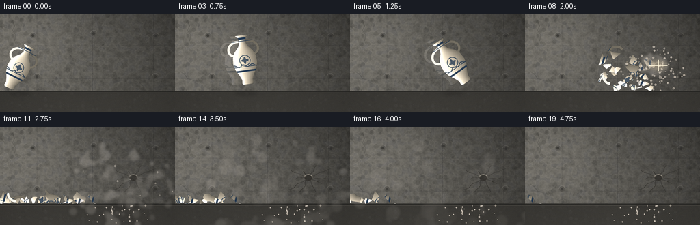
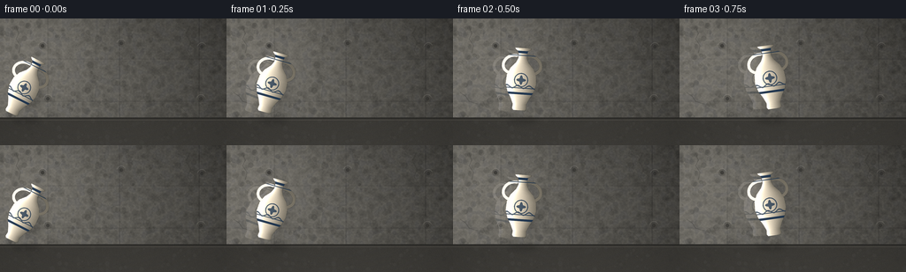
展开代码变化
--- 上一保存版本
+++ 本次保存版本
@@ -0,0 +1,622 @@
+from __future__ import annotations
+
+import math
+from dataclasses import dataclass
+from pathlib import Path
+
+import numpy as np
+from PIL import Image, ImageDraw, ImageFilter
+
+import artifact_io
+
+
+WIDTH = 256
+HEIGHT = 144
+FRAMES = 20
+FPS = 4.0
+SCALE = 4
+SW = WIDTH * SCALE
+SH = HEIGHT * SCALE
+FLOOR_Y = 113.0
+IMPACT_FRAME = 7
+IMPACT_TIME = IMPACT_FRAME / FPS
+IMPACT_CENTER = (178.0, 75.0)
+IMPACT_POINT = (195.0, 75.0)
+
+
+def smoothstep(edge0: float, edge1: float, value: np.ndarray | float):
+ t = np.clip((value - edge0) / (edge1 - edge0), 0.0, 1.0)
+ return t * t * (3.0 - 2.0 * t)
+
+
+def resize_noise(rng: np.random.Generator, low_w: int, low_h: int) -> np.ndarray:
+ values = rng.random((low_h, low_w), dtype=np.float32)
+ image = Image.fromarray((values * 255).astype(np.uint8), "L")
+ return np.asarray(image.resize((SW, SH), Image.Resampling.BICUBIC), dtype=np.float32) / 255.0
+
+
+def make_concrete_background() -> Image.Image:
+ rng = np.random.default_rng(417)
+ y, x = np.mgrid[0:SH, 0:SW].astype(np.float32)
+ xf, yf = x / SCALE, y / SCALE
+
+ broad = resize_noise(rng, 48, 27)
+ medium = resize_noise(rng, 160, 90)
+ fine = resize_noise(rng, 512, 288)
+ grain = rng.normal(0.0, 1.0, (SH, SW)).astype(np.float32)
+ grain = np.asarray(
+ Image.fromarray(np.clip(grain * 34 + 128, 0, 255).astype(np.uint8), "L").filter(
+ ImageFilter.GaussianBlur(0.65)
+ ),
+ dtype=np.float32,
+ ) / 255.0 - 0.5
+
+ wall_light = 0.93 - 0.00036 * x + 0.00014 * y
+ wall_light += 0.10 * np.exp(-((xf - 34.0) / 74.0) ** 2 - ((yf - 26.0) / 64.0) ** 2)
+ wall_light += 0.16 * (broad - 0.5) + 0.08 * (medium - 0.5) + 0.05 * (fine - 0.5) + 0.045 * grain
+
+ wall = np.empty((SH, SW, 3), dtype=np.float32)
+ wall[..., 0] = 122.0 * wall_light
+ wall[..., 1] = 121.0 * wall_light
+ wall[..., 2] = 115.0 * wall_light
+
+ # Broad damp patches and mineral staining.
+ stain = smoothstep(0.58, 0.83, broad)
+ wall[..., 0] *= 1.0 - 0.10 * stain
+ wall[..., 1] *= 1.0 - 0.095 * stain
+ wall[..., 2] *= 1.0 - 0.075 * stain
+
+ # Subtle formwork panel seams.
+ seams = [54.0, 135.0, 225.0]
+ for seam in seams:
+ distance = np.abs(xf - seam)
+ line = np.exp(-(distance / 0.55) ** 2)
+ wall -= line[..., None] * np.array([12.0, 12.0, 11.0], dtype=np.float32)
+ for seam_y in [46.0, 94.0]:
+ distance = np.abs(yf - seam_y)
+ line = np.exp(-(distance / 0.5) ** 2)
+ wall -= line[..., None] * np.array([8.0, 8.0, 7.0], dtype=np.float32)
+
+ image = Image.fromarray(np.clip(wall, 0, 255).astype(np.uint8), "RGB")
+ draw = ImageDraw.Draw(image, "RGBA")
+
+ # Cast concrete pores and small chips.
+ for _ in range(760):
+ px = int(rng.integers(0, SW))
+ py = int(rng.integers(0, int(FLOOR_Y * SCALE)))
+ radius = int(rng.integers(1, max(2, 4 * SCALE)))
+ shade = int(rng.integers(35, 72))
+ draw.ellipse((px - radius, py - radius, px + radius, py + radius), fill=(shade, shade, shade - 2, int(rng.integers(16, 44))))
+
+ # Tie holes in the formwork.
+ for tx, ty in [(48, 31), (137, 28), (228, 32), (54, 91), (227, 91)]:
+ cx, cy = tx * SCALE, ty * SCALE
+ draw.ellipse((cx - 4 * SCALE, cy - 4 * SCALE, cx + 4 * SCALE, cy + 4 * SCALE), fill=(54, 53, 50, 70))
+ draw.ellipse((cx - 2 * SCALE, cy - 2 * SCALE, cx + 2 * SCALE, cy + 2 * SCALE), fill=(39, 39, 37, 115))
+ draw.arc(
+ (cx - 5 * SCALE, cy - 5 * SCALE, cx + 5 * SCALE, cy + 5 * SCALE),
+ 195,
+ 340,
+ fill=(178, 176, 167, 42),
+ width=SCALE,
+ )
+
+ # A few old hairline cracks.
+ old_cracks = [
+ [(18, 9), (21, 17), (18, 23), (23, 31), (21, 39)],
+ [(214, 9), (210, 18), (215, 27), (212, 36), (217, 44)],
+ [(8, 84), (14, 88), (18, 94), (28, 97)],
+ [(196, 98), (204, 100), (210, 106)],
+ ]
+ for points in old_cracks:
+ points = [(int(px * SCALE), int(py * SCALE)) for px, py in points]
+ draw.line(points, fill=(47, 47, 44, 60), width=max(1, SCALE), joint="curve")
+
+ # Floor: darker, matte, and receding into the wall base.
+ floor_top = int(FLOOR_Y * SCALE)
+ floor = np.empty((SH - floor_top, SW, 3), dtype=np.float32)
+ fy = np.arange(SH - floor_top, dtype=np.float32)[:, None] / SCALE + FLOOR_Y
+ floor_noise = fine[floor_top:] * 0.08 + grain[floor_top:] * 0.055
+ depth_light = 0.82 + 0.0026 * (fy - FLOOR_Y)
+ floor[..., 0] = 73.0 * depth_light
+ floor[..., 1] = 72.0 * depth_light
+ floor[..., 2] = 68.0 * depth_light
+ floor += (floor_noise[..., None] - 0.035) * 46.0
+ floor_image = Image.fromarray(np.clip(floor, 0, 255).astype(np.uint8), "RGB")
+ image.paste(floor_image, (0, floor_top))
+ draw = ImageDraw.Draw(image, "RGBA")
+ draw.line((0, floor_top, SW, floor_top), fill=(40, 40, 38, 180), width=2 * SCALE)
+ draw.line((0, floor_top + 2 * SCALE, SW, floor_top + 2 * SCALE), fill=(158, 155, 145, 38), width=SCALE)
+
+ # Sparse floor dust and aggregate.
+ for _ in range(180):
+ px = int(rng.integers(0, SW))
+ py = int(rng.integers(floor_top + 3 * SCALE, SH))
+ r = int(rng.integers(1, 3 * SCALE))
+ c = int(rng.integers(45, 98))
+ draw.ellipse((px - r, py - r, px + r, py + r), fill=(c, c, c - 2, int(rng.integers(18, 45))))
+
+ # Gentle cinematic vignette.
+ vignette = np.clip(
+ 1.0
+ - 0.20 * (((xf - WIDTH * 0.47) / (WIDTH * 0.78)) ** 2 + ((yf - HEIGHT * 0.46) / (HEIGHT * 0.84)) ** 2),
+ 0.73,
+ 1.0,
+ )
+ arr = np.asarray(image, dtype=np.float32) * vignette[..., None]
+ return Image.fromarray(np.clip(arr, 0, 255).astype(np.uint8), "RGB")
+
+
+def cubic_bezier(start, control1, control2, end, steps=48):
+ values = []
+ for t in np.linspace(0.0, 1.0, steps):
+ u = 1.0 - t
+ x = u**3 * start[0] + 3 * u * u * t * control1[0] + 3 * u * t * t * control2[0] + t**3 * end[0]
+ y = u**3 * start[1] + 3 * u * u * t * control1[1] + 3 * u * t * t * control2[1] + t**3 * end[1]
+ values.append((x, y))
+ return values
+
+
+def make_vase_sprite() -> Image.Image:
+ sprite_w, sprite_h = 320, 376
+ cx, cy = sprite_w / 2.0, sprite_h / 2.0
+ yy, xx = np.mgrid[0:sprite_h, 0:sprite_w].astype(np.float32)
+ lx = (xx - cx) / SCALE
+ ly = (yy - cy) / SCALE
+
+ table_y = np.array([-36.0, -34.5, -32.0, -29.0, -24.0, -19.0, -12.0, -4.0, 6.0, 15.0, 23.0, 30.0, 35.0, 37.0])
+ table_r = np.array([9.5, 9.0, 5.7, 5.2, 5.2, 7.5, 13.7, 17.3, 18.0, 15.5, 11.0, 8.0, 8.5, 7.0])
+ radius = np.interp(ly, table_y, table_r, left=0.0, right=0.0)
+ body_mask = (np.abs(lx) <= radius) & (ly >= -36.0) & (ly <= 37.0)
+
+ handle_image = Image.new("L", (sprite_w, sprite_h), 0)
+ handle_draw = ImageDraw.Draw(handle_image)
+ width = int(3.8 * SCALE)
+ left_curve = cubic_bezier((-7.0, -27.0), (-24.0, -27.0), (-27.0, -8.0), (-13.0, -6.0))
+ right_curve = cubic_bezier((7.0, -27.0), (24.0, -27.0), (27.0, -8.0), (13.0, -6.0))
+ for curve in (left_curve, right_curve):
+ points = [(int((cx + px * SCALE)), int((cy + py * SCALE))) for px, py in curve]
+ handle_draw.line(points, fill=255, width=width, joint="curve")
+ for px, py in (points[0], points[-1]):
+ handle_draw.ellipse((px - width // 2, py - width // 2, px + width // 2, py + width // 2), fill=255)
+
+ handle_mask = np.asarray(handle_image, dtype=np.uint8) > 0
+ mask = body_mask | handle_mask
+ radius_safe = np.maximum(radius, 3.0)
+ nx = np.clip(lx / radius_safe, -1.0, 1.0)
+ body_vertical = np.clip((ly + 36.0) / 73.0, 0.0, 1.0)
+ light = 0.92 - 0.43 * nx + 0.06 * np.sin(body_vertical * math.pi)
+ light = np.clip(light, 0.28, 1.28)
+ edge_glow = np.exp(-((nx + 0.70) / 0.20) ** 2) * 0.35
+
+ base = np.array([218.0, 211.0, 190.0], dtype=np.float32)
+ shadow_tint = np.array([91.0, 101.0, 97.0], dtype=np.float32)
+ color = base[None, None, :] * light[..., None]
+ color += (shadow_tint - color) * np.clip((0.52 - light) * 0.55, 0.0, 0.32)[..., None]
+ color += edge_glow[..., None] * np.array([70.0, 82.0, 72.0], dtype=np.float32)
+
+ # Cobalt-blue glaze: rim bands, a central medallion, and a restrained vine.
+ navy = np.array([26.0, 49.0, 77.0], dtype=np.float32)
+ band = ((ly >= -32.5) & (ly <= -29.8)) | ((ly >= 16.0) & (ly <= 18.3))
+ thin_bands = ((ly >= -27.8) & (ly <= -26.8)) | ((ly >= 10.5) & (ly <= 11.3))
+ ring_r = np.sqrt(lx * lx + (ly - 1.5) ** 2)
+ medallion = (ring_r >= 7.2) & (ring_r <= 8.3)
+ petals = (
+ (((lx / 2.0) ** 2 + ((ly - 1.5) / 5.6) ** 2) < 1.0)
+ | (((lx / 5.6) ** 2 + ((ly - 1.5) / 2.0) ** 2) < 1.0)
+ ) & (ring_r < 6.5)
+ vine = (
+ (ly > 7.0)
+ & (ly < 13.0)
+ & (np.abs(ly - (9.5 + 1.6 * np.sin(lx * 0.48))) < 0.72)
+ )
+ pattern = band | thin_bands | medallion | petals | vine
+ pattern_strength = np.where(band, 0.93, np.where(pattern, 0.75, 0.0))
+ color = color * (1.0 - pattern_strength[..., None]) + navy * pattern_strength[..., None]
+
+ # Glaze mottling and a fine painted texture.
+ rng = np.random.default_rng(88)
+ mottle = rng.normal(0.0, 1.0, (sprite_h, sprite_w)).astype(np.float32)
+ mottle = np.asarray(Image.fromarray(np.clip(mottle * 36 + 128, 0, 255).astype(np.uint8)).filter(ImageFilter.GaussianBlur(1.0)))
+ color += (mottle[..., None] - 128.0) * 0.045
+
+ # Dark rim around the silhouette, with a brighter upper-left bevel.
+ eroded = mask.copy()
+ for dy, dx in ((-1, 0), (1, 0), (0, -1), (0, 1)):
+ eroded &= np.roll(mask, (dy, dx), axis=(0, 1))
+ outline = mask & ~eroded
+ color[outline] = color[outline] * 0.42 + np.array([36.0, 38.0, 36.0]) * 0.58
+
+ alpha = np.where(mask, 255, 0).astype(np.uint8)
+ rgba = np.dstack((np.clip(color, 0, 255), alpha)).astype(np.uint8)
+ return Image.fromarray(rgba, "RGBA")
+
+
+@dataclass
+class Shard:
+ image: Image.Image
+ offset: tuple[float, float]
+ position: np.ndarray
+ velocity: np.ndarray
+ angle: float
+ angular_velocity: float
+ bounce_count: int = 0
+
+
+def make_shards(contact_vase: Image.Image) -> list[Shard]:
+ rng = np.random.default_rng(9921)
+ alpha = np.asarray(contact_vase.getchannel("A"))
+ yy, xx = np.nonzero(alpha > 12)
+ if len(xx) == 0:
+ return []
+ bbox = (int(xx.min()), int(yy.min()), int(xx.max()) + 1, int(yy.max()) + 1)
+
+ # Voronoi fracture: irregular pieces, each retaining its original glaze and pattern.
+ seeds = []
+ for _ in range(30):
+ for _attempt in range(100):
+ sx = float(rng.uniform(bbox[0] + 4, bbox[2] - 4))
+ sy = float(rng.uniform(bbox[1] + 4, bbox[3] - 4))
+ if alpha[int(sy), int(sx)] > 40:
+ seeds.append((sx, sy))
+ break
+ seeds_array = np.asarray(seeds, dtype=np.float32)
+ labels = np.full(alpha.shape, -1, dtype=np.int16)
+ region_alpha = alpha[bbox[1]:bbox[3], bbox[0]:bbox[2]]
+ local_y, local_x = np.mgrid[bbox[1]:bbox[3], bbox[0]:bbox[2]]
+ valid_y, valid_x = np.nonzero(region_alpha > 12)
+ points = np.stack((valid_x + bbox[0], valid_y + bbox[1]), axis=1).astype(np.float32)
+ distances = np.sum((points[:, None, :] - seeds_array[None, :, :]) ** 2, axis=2)
+ assignments = np.argmin(distances, axis=1)
+ labels[points[:, 1].astype(int), points[:, 0].astype(int)] = assignments
+
+ source = np.asarray(contact_vase)
+ shards: list[Shard] = []
+ sprite_cx = contact_vase.width / 2.0
+ sprite_cy = contact_vase.height / 2.0
+ contact_px = np.array(IMPACT_CENTER, dtype=np.float32) * SCALE
+ impact_px = np.array(IMPACT_POINT, dtype=np.float32) * SCALE
+
+ for label in range(len(seeds)):
+ mask = labels == label
+ count = int(mask.sum())
+ if count < 26:
+ continue
+ ys, xs = np.nonzero(mask)
+ x0, x1 = int(xs.min()), int(xs.max()) + 1
+ y0, y1 = int(ys.min()), int(ys.max()) + 1
+ crop_alpha = np.where(mask[y0:y1, x0:x1], alpha[y0:y1, x0:x1], 0).astype(np.uint8)
+ crop_rgb = source[y0:y1, x0:x1, :3]
+ crop = np.dstack((crop_rgb, crop_alpha))
+ piece = Image.fromarray(crop, "RGBA")
+
+ center_local = np.array([(x0 + x1) / 2.0, (y0 + y1) / 2.0], dtype=np.float32)
+ offset = (center_local[0] - sprite_cx, center_local[1] - sprite_cy)
+ position = contact_px + center_local - np.array([sprite_cx, sprite_cy], dtype=np.float32)
+ rel = position - impact_px
+ size = float(np.sqrt(count)) / SCALE
+ velocity = np.array(
+ [
+ -88.0 * SCALE + rel[0] * 1.7 + rng.normal(0, 24.0 * SCALE),
+ rel[1] * 2.0 + rng.normal(0, 44.0 * SCALE),
+ ],
+ dtype=np.float32,
+ )
+ angle = float(rng.uniform(-14.0, 14.0))
+ angular_velocity = float(rng.uniform(-310.0, 310.0) / max(0.75, size))
+ shards.append(Shard(piece, offset, position, velocity, angle, angular_velocity))
+ return shards
+
+
+@dataclass
+class DustParticle:
+ origin: np.ndarray
+ velocity: np.ndarray
+ radius: float
+ alpha: float
+ color: tuple[int, int, int]
+ growth: float
+
+
+def make_dust() -> list[DustParticle]:
+ rng = np.random.default_rng(604)
+ particles = []
+ origin = np.array(IMPACT_POINT, dtype=np.float32) * SCALE
+ for index in range(115):
+ angle = rng.uniform(-math.pi * 0.92, math.pi * 0.92)
+ speed = rng.uniform(18.0, 122.0) * SCALE
+ velocity = np.array([math.cos(angle) * speed * 0.72 - 28.0 * SCALE, math.sin(angle) * speed * 0.52 - 10.0 * SCALE])
+ radius = rng.uniform(1.0, 4.3) * SCALE
+ shade = int(rng.integers(145, 196))
+ particles.append(
+ DustParticle(
+ origin.copy(),
+ velocity.astype(np.float32),
+ float(radius),
+ float(rng.uniform(0.18, 0.46)),
+ (shade, shade - 3, shade - 9),
+ float(rng.uniform(1.5, 4.5) * SCALE),
+ )
+ )
+ return particles
+
+
+def make_specks() -> list[DustParticle]:
+ rng = np.random.default_rng(1904)
+ specks = []
+ origin = np.array(IMPACT_POINT, dtype=np.float32) * SCALE
+ for _ in range(90):
+ angle = rng.uniform(-math.pi, math.pi)
+ speed = rng.uniform(35.0, 195.0) * SCALE
+ velocity = np.array([math.cos(angle) * speed - 25.0 * SCALE, math.sin(angle) * speed * 0.72])
+ radius = rng.uniform(0.45, 1.7) * SCALE
+ shade = int(rng.integers(185, 239))
+ specks.append(
+ DustParticle(
+ origin.copy(),
+ velocity.astype(np.float32),
+ float(radius),
+ float(rng.uniform(0.50, 0.92)),
+ (shade, shade - 5, shade - 17),
+ 0.0,
+ )
+ )
+ return specks
+
+
+def approach_transform(frame_index: int) -> tuple[tuple[float, float], float, float]:
+ positions = [
+ (28.0, 77.0),
+ (52.0, 72.5),
+ (77.0, 68.5),
+ (102.0, 66.0),
+ (126.0, 66.5),
+ (149.0, 69.5),
+ (167.0, 73.0),
+ IMPACT_CENTER,
+ ]
+ angles = [-27.0, -16.0, -4.0, 8.0, 21.0, 35.0, 50.0, 63.0]
+ scales = [0.93, 0.95, 0.97, 0.99, 1.00, 1.00, 1.00, 1.00]
+ return positions[frame_index], angles[frame_index], scales[frame_index]
+
+
+def paste_vase(
+ canvas: Image.Image,
+ vase: Image.Image,
+ center: tuple[float, float],
+ angle: float,
+ scale: float,
+ opacity: int = 255,
+) -> None:
+ sprite = vase
+ if abs(scale - 1.0) > 1e-4:
+ new_size = (max(1, int(round(vase.width * scale))), max(1, int(round(vase.height * scale))))
+ sprite = vase.resize(new_size, Image.Resampling.LANCZOS)
+ rotated = sprite.rotate(angle, resample=Image.Resampling.BICUBIC, expand=True)
+ if opacity < 255:
+ alpha = rotated.getchannel("A").point(lambda value: value * opacity // 255)
+ rotated.putalpha(alpha)
+ px = int(round(center[0] * SCALE - rotated.width / 2.0))
+ py = int(round(center[1] * SCALE - rotated.height / 2.0))
+ canvas.alpha_composite(rotated, (px, py))
+
+
+def draw_soft_shadow(canvas: Image.Image, center_x: float, center_y: float, width: float, height: float, alpha: int) -> None:
+ layer = Image.new("RGBA", (SW, SH), (0, 0, 0, 0))
+ draw = ImageDraw.Draw(layer)
+ cx, cy = center_x * SCALE, center_y * SCALE
+ draw.ellipse(
+ (cx - width * SCALE / 2, cy - height * SCALE / 2, cx + width * SCALE / 2, cy + height * SCALE / 2),
+ fill=(18, 18, 17, alpha),
+ )
+ layer = layer.filter(ImageFilter.GaussianBlur(3.0 * SCALE))
+ canvas.alpha_composite(layer)
+
+
+def draw_wall_damage(canvas: Image.Image, frame_index: int) -> None:
+ if frame_index < IMPACT_FRAME:
+ return
+ age = frame_index - IMPACT_FRAME
+ layer = Image.new("RGBA", (SW, SH), (0, 0, 0, 0))
+ draw = ImageDraw.Draw(layer)
+ cx, cy = IMPACT_POINT[0] * SCALE, IMPACT_POINT[1] * SCALE
+
+ crater_alpha = min(220, 100 + age * 28)
+ draw.ellipse(
+ (cx - 5.5 * SCALE, cy - 4.0 * SCALE, cx + 5.5 * SCALE, cy + 4.0 * SCALE),
+ fill=(47, 45, 41, crater_alpha),
+ )
+ draw.arc(
+ (cx - 7.0 * SCALE, cy - 5.5 * SCALE, cx + 7.0 * SCALE, cy + 5.5 * SCALE),
+ 188,
+ 350,
+ fill=(186, 181, 166, min(175, 55 + age * 22)),
+ width=SCALE,
+ )
+
+ rng = np.random.default_rng(312)
+ for index in range(10):
+ angle = (index / 10.0) * math.tau + rng.uniform(-0.15, 0.15)
+ length = rng.uniform(15.0, 46.0) * SCALE * min(1.0, (age + 1) / 3.0)
+ points = []
+ for step in range(5):
+ t = step / 4.0
+ jitter = (rng.uniform(-2.4, 2.4) * SCALE) * math.sin(t * math.pi)
+ px = cx + math.cos(angle) * length * t + jitter
+ py = cy + math.sin(angle) * length * t * 0.64 + rng.uniform(-1.1, 1.1) * SCALE
+ points.append((px, py))
+ draw.line(points, fill=(43, 42, 39, min(175, 50 + age * 22)), width=max(1, SCALE // 2 + 1), joint="curve")
+ canvas.alpha_composite(layer)
+
+
+def draw_impact_flash(canvas: Image.Image, frame_index: int) -> None:
+ if frame_index < IMPACT_FRAME or frame_index > IMPACT_FRAME + 2:
+ return
+ age = frame_index - IMPACT_FRAME
+ strength = [0.62, 0.84, 0.34][age]
+ layer = Image.new("RGBA", (SW, SH), (0, 0, 0, 0))
+ draw = ImageDraw.Draw(layer)
+ cx, cy = IMPACT_POINT[0] * SCALE, IMPACT_POINT[1] * SCALE
+ radii = [10.0, 16.0, 23.0]
+ radius = radii[age] * SCALE
+ for fraction, alpha in [(1.0, 0.15), (0.70, 0.25), (0.40, 0.42)]:
+ r = radius * fraction
+ draw.ellipse(
+ (cx - r, cy - r * 0.66, cx + r, cy + r * 0.66),
+ fill=(255, 241, 202, int(255 * strength * alpha)),
+ )
+ layer = layer.filter(ImageFilter.GaussianBlur(2.4 * SCALE))
+ canvas.alpha_composite(layer)
+ draw = ImageDraw.Draw(canvas, "RGBA")
+ spike = 16.0 * SCALE * strength
+ draw.line((cx - spike, cy, cx + spike, cy), fill=(255, 247, 221, int(115 * strength)), width=SCALE)
+ draw.line((cx, cy - spike * 0.6, cx, cy + spike * 0.6), fill=(255, 247, 221, int(90 * strength)), width=SCALE)
+
+
+def paste_shards(canvas: Image.Image, shards: list[Shard], frame_index: int) -> None:
+ if frame_index <= IMPACT_FRAME:
+ return
+ elapsed = (frame_index - IMPACT_FRAME) / FPS
+ floor_px = FLOOR_Y * SCALE
+ for shard in shards:
+ gravity = np.array([0.0, 235.0 * SCALE])
+ position = shard.position + shard.velocity * elapsed + 0.5 * gravity * elapsed * elapsed
+ velocity = shard.velocity + gravity * elapsed
+ rotated = shard.image.rotate(shard.angle + shard.angular_velocity * elapsed, resample=Image.Resampling.BICUBIC, expand=True)
+ half_h = rotated.height / 2.0
+ if position[1] + half_h > floor_px:
+ # Approximate a damped floor impact; after the first bounce, let pieces settle flat.
+ bounce_delay = max(0.0, elapsed - 0.22)
+ position[1] = floor_px - half_h
+ if velocity[1] > 0:
+ velocity[1] *= -0.24
+ if elapsed > 0.58:
+ rotated = shard.image.rotate(shard.angle * 0.55 + 8.0, resample=Image.Resampling.BICUBIC, expand=True)
+ position[1] = floor_px - rotated.height / 2.0
+ velocity[0] *= 0.55
+ half_h = rotated.height / 2.0
+ position[1] = min(position[1], floor_px - half_h)
+ px = int(round(position[0] - rotated.width / 2.0))
+ py = int(round(position[1] - rotated.height / 2.0))
+ canvas.alpha_composite(rotated, (px, py))
+
+
+def draw_dust(canvas: Image.Image, dust: list[DustParticle], specks: list[DustParticle], frame_index: int) -> None:
+ if frame_index <= IMPACT_FRAME:
+ return
+ elapsed = (frame_index - IMPACT_FRAME) / FPS
+ layer = Image.new("RGBA", (SW, SH), (0, 0, 0, 0))
+ draw = ImageDraw.Draw(layer)
+ for particle in dust:
+ position = particle.origin + particle.velocity * elapsed
+ position[1] += 0.5 * 42.0 * SCALE * elapsed * elapsed
+ position[0] += 0.5 * 5.0 * SCALE * elapsed * elapsed
+ fade = max(0.0, 1.0 - elapsed / 3.1)
+ radius = (particle.radius + particle.growth * elapsed) * (1.0 + 0.11 * math.sin(elapsed * 4.0 + particle.radius))
+ alpha = int(255 * particle.alpha * fade)
+ if alpha <= 0:
+ continue
+ r, g, b = particle.color
+ draw.ellipse((position[0] - radius, position[1] - radius, position[0] + radius, position[1] + radius), fill=(r, g, b, alpha))
+ layer = layer.filter(ImageFilter.GaussianBlur(2.0 * SCALE))
+ canvas.alpha_composite(layer)
+
+ specks_layer = Image.new("RGBA", (SW, SH), (0, 0, 0, 0))
+ specks_draw = ImageDraw.Draw(specks_layer)
+ floor_px = FLOOR_Y * SCALE
+ for particle in specks:
+ position = particle.origin + particle.velocity * elapsed
+ position[1] += 0.5 * 245.0 * SCALE * elapsed * elapsed
+ if position[1] > floor_px:
+ continue
+ fade = max(0.0, 1.0 - elapsed / 2.8)
+ radius = particle.radius
+ alpha = int(255 * particle.alpha * fade)
+ r, g, b = particle.color
+ specks_draw.ellipse((position[0] - radius, position[1] - radius, position[0] + radius, position[1] + radius), fill=(r, g, b, alpha))
+ canvas.alpha_composite(specks_layer)
+
+
+def draw_floor_debris(canvas: Image.Image, shards: list[Shard], frame_index: int) -> None:
+ if frame_index < IMPACT_FRAME + 3:
+ return
+ rng = np.random.default_rng(781)
+ layer = Image.new("RGBA", (SW, SH), (0, 0, 0, 0))
+ draw = ImageDraw.Draw(layer)
+ for _ in range(34):
+ x = rng.uniform(125.0, 218.0) * SCALE
+ y = rng.uniform(FLOOR_Y + 1.5, HEIGHT - 3.0) * SCALE
+ r = rng.uniform(0.45, 1.35) * SCALE
+ shade = int(rng.integers(168, 222))
+ draw.ellipse((x - r, y - r, x + r, y + r), fill=(shade, shade - 5, shade - 16, 210))
+ canvas.alpha_composite(layer)
+
+
+def render_frame(frame_index: int, background: Image.Image, vase: Image.Image, shards: list[Shard], dust, specks) -> Image.Image:
+ canvas = background.copy().convert("RGBA")
+
+ if frame_index <= IMPACT_FRAME:
+ center, angle, scale = approach_transform(frame_index)
+ # Floor contact shadow, plus a fainter wall shadow.
+ shadow_alpha = 52 if center[1] < 90 else 65
+ draw_soft_shadow(canvas, center[0] + 1.5, FLOOR_Y + 2.5, 32.0, 6.0, shadow_alpha)
+ draw_soft_shadow(canvas, center[0] + 9.0, center[1] + 3.0, 26.0, 54.0, 23)
+
+ # Short motion ghosts emphasize the high-speed throw at 4 fps.
+ if frame_index > 0:
+ previous, previous_angle, previous_scale = approach_transform(frame_index - 1)
+ midpoint = ((center[0] + previous[0]) * 0.5, (center[1] + previous[1]) * 0.5)
+ paste_vase(canvas, vase, midpoint, (angle + previous_angle) * 0.5, previous_scale, opacity=35)
+ if frame_index == IMPACT_FRAME:
+ paste_vase(canvas, vase, center, angle, scale, opacity=255)
+ # Hairline cracks at contact make the instant of collision legible.
+ draw = ImageDraw.Draw(canvas, "RGBA")
+ cx, cy = IMPACT_POINT[0] * SCALE, IMPACT_POINT[1] * SCALE
+ for dy in (-7, 0, 8):
+ draw.line(
+ (cx - 7 * SCALE, cy + dy * SCALE, cx + 9 * SCALE, cy + (dy + 3) * SCALE),
+ fill=(48, 47, 44, 115),
+ width=SCALE,
+ )
+ else:
+ paste_vase(canvas, vase, center, angle, scale)
+ else:
+ draw_soft_shadow(canvas, IMPACT_CENTER[0] + 1.0, FLOOR_Y + 2.0, 42.0, 6.0, 46)
+ paste_shards(canvas, shards, frame_index)
+ draw_floor_debris(canvas, shards, frame_index)
+
+ draw_wall_damage(canvas, frame_index)
+ draw_dust(canvas, dust, specks, frame_index)
+ draw_impact_flash(canvas, frame_index)
+
+ # Light filmic grain and a restrained cool/warm grade.
+ arr = np.asarray(canvas.convert("RGB"), dtype=np.float32)
+ rng = np.random.default_rng(1300 + frame_index)
+ grain = rng.normal(0.0, 2.2, (SH, SW, 1)).astype(np.float32)
+ arr = arr * np.array([1.015, 1.0, 0.985], dtype=np.float32) + grain
+ arr[..., 0] += 2.5 * smoothstep(0.35, 0.75, arr[..., 0] / 255.0)
+ arr[..., 2] += 1.2 * smoothstep(0.55, 0.90, arr[..., 2] / 255.0)
+ image = Image.fromarray(np.clip(arr, 0, 255).astype(np.uint8), "RGB")
+ return image.resize((WIDTH, HEIGHT), Image.Resampling.LANCZOS)
+
+
+def main() -> None:
+ case_dir = Path(__file__).resolve().parent
+ background = make_concrete_background()
+ vase = make_vase_sprite()
+ _, contact_angle, _ = approach_transform(IMPACT_FRAME)
+ contact_vase = vase.rotate(contact_angle, resample=Image.Resampling.BICUBIC, expand=True)
+ shards = make_shards(contact_vase)
+ dust = make_dust()
+ specks = make_specks()
+
+ frames = [
+ render_frame(frame_index, background, vase, shards, dust, specks)
+ for frame_index in range(FRAMES)
+ ]
+ artifact_io.save(np.asarray(frames), case_dir)
+ print(f"wrote {len(frames)} frames to {case_dir}")
+
+
+if __name__ == "__main__":
+ main()
候选 02播放与检查图
点击播放 · 原生 RGB 像素

展开代码变化
--- 上一保存版本
+++ 本次保存版本
@@ -253,7 +253,7 @@
# Voronoi fracture: irregular pieces, each retaining its original glaze and pattern.
seeds = []
- for _ in range(30):
+ for _ in range(22):
for _attempt in range(100):
sx = float(rng.uniform(bbox[0] + 4, bbox[2] - 4))
sy = float(rng.uniform(bbox[1] + 4, bbox[3] - 4))
@@ -280,7 +280,7 @@
for label in range(len(seeds)):
mask = labels == label
count = int(mask.sum())
- if count < 26:
+ if count < 75:
continue
ys, xs = np.nonzero(mask)
x0, x1 = int(xs.min()), int(xs.max()) + 1
@@ -297,8 +297,8 @@
size = float(np.sqrt(count)) / SCALE
velocity = np.array(
[
- -88.0 * SCALE + rel[0] * 1.7 + rng.normal(0, 24.0 * SCALE),
- rel[1] * 2.0 + rng.normal(0, 44.0 * SCALE),
+ -72.0 * SCALE + rel[0] * 1.55 + rng.normal(0, 18.0 * SCALE),
+ rel[1] * 1.8 + rng.normal(0, 32.0 * SCALE),
],
dtype=np.float32,
)
@@ -306,6 +306,56 @@
angular_velocity = float(rng.uniform(-310.0, 310.0) / max(0.75, size))
shards.append(Shard(piece, offset, position, velocity, angle, angular_velocity))
return shards
+
+
+def make_settled_pieces(contact_vase: Image.Image) -> list[Shard]:
+ """Smaller pieces remain on the floor after the main radial breakup."""
+ rng = np.random.default_rng(3319)
+ alpha = np.asarray(contact_vase.getchannel("A"))
+ yy, xx = np.nonzero(alpha > 12)
+ bbox = (int(xx.min()), int(yy.min()), int(xx.max()) + 1, int(yy.max()) + 1)
+ seeds = []
+ for _ in range(18):
+ for _attempt in range(80):
+ sx = float(rng.uniform(bbox[0] + 2, bbox[2] - 2))
+ sy = float(rng.uniform(bbox[1] + 2, bbox[3] - 2))
+ if alpha[int(sy), int(sx)] > 40:
+ seeds.append((sx, sy))
+ break
+ seeds_array = np.asarray(seeds, dtype=np.float32)
+ labels = np.full(alpha.shape, -1, dtype=np.int16)
+ valid_y, valid_x = np.nonzero(alpha > 12)
+ points = np.stack((valid_x, valid_y), axis=1).astype(np.float32)
+ distances = np.sum((points[:, None, :] - seeds_array[None, :, :]) ** 2, axis=2)
+ labels[points[:, 1].astype(int), points[:, 0].astype(int)] = np.argmin(distances, axis=1)
+ source = np.asarray(contact_vase)
+ sprite_cx, sprite_cy = contact_vase.width / 2.0, contact_vase.height / 2.0
+ impact_px = np.array(IMPACT_POINT, dtype=np.float32) * SCALE
+ pieces = []
+ for label in range(len(seeds)):
+ mask = labels == label
+ if int(mask.sum()) < 45:
+ continue
+ ys, xs = np.nonzero(mask)
+ x0, x1, y0, y1 = int(xs.min()), int(xs.max()) + 1, int(ys.min()), int(ys.max()) + 1
+ crop_alpha = np.where(mask[y0:y1, x0:x1], alpha[y0:y1, x0:x1], 0).astype(np.uint8)
+ crop = np.dstack((source[y0:y1, x0:x1, :3], crop_alpha))
+ piece = Image.fromarray(crop, "RGBA")
+ center_local = np.array([(x0 + x1) / 2.0, (y0 + y1) / 2.0], dtype=np.float32)
+ start = np.array(IMPACT_CENTER, dtype=np.float32) * SCALE + center_local - np.array([sprite_cx, sprite_cy])
+ rel = start - impact_px
+ angle = float(rng.uniform(-28.0, 28.0))
+ pieces.append(
+ Shard(
+ piece,
+ (float(center_local[0] - sprite_cx), float(center_local[1] - sprite_cy)),
+ start,
+ np.array([-36.0 * SCALE + rel[0] * 0.55, 28.0 * SCALE + rel[1] * 0.9], dtype=np.float32),
+ angle,
+ float(rng.uniform(-110.0, 110.0)),
+ )
+ )
+ return pieces
@dataclass
@@ -479,19 +529,18 @@
elapsed = (frame_index - IMPACT_FRAME) / FPS
floor_px = FLOOR_Y * SCALE
for shard in shards:
- gravity = np.array([0.0, 235.0 * SCALE])
+ gravity = np.array([0.0, 270.0 * SCALE])
position = shard.position + shard.velocity * elapsed + 0.5 * gravity * elapsed * elapsed
velocity = shard.velocity + gravity * elapsed
rotated = shard.image.rotate(shard.angle + shard.angular_velocity * elapsed, resample=Image.Resampling.BICUBIC, expand=True)
half_h = rotated.height / 2.0
if position[1] + half_h > floor_px:
# Approximate a damped floor impact; after the first bounce, let pieces settle flat.
- bounce_delay = max(0.0, elapsed - 0.22)
position[1] = floor_px - half_h
if velocity[1] > 0:
velocity[1] *= -0.24
- if elapsed > 0.58:
- rotated = shard.image.rotate(shard.angle * 0.55 + 8.0, resample=Image.Resampling.BICUBIC, expand=True)
+ if elapsed > 0.55:
+ rotated = shard.image.rotate(shard.angle * 0.48 + 10.0, resample=Image.Resampling.BICUBIC, expand=True)
position[1] = floor_px - rotated.height / 2.0
velocity[0] *= 0.55
half_h = rotated.height / 2.0
@@ -499,6 +548,24 @@
px = int(round(position[0] - rotated.width / 2.0))
py = int(round(position[1] - rotated.height / 2.0))
canvas.alpha_composite(rotated, (px, py))
+
+
+def paste_settled_pieces(canvas: Image.Image, pieces: list[Shard], frame_index: int) -> None:
+ if frame_index < IMPACT_FRAME + 4:
+ return
+ floor_px = FLOOR_Y * SCALE
+ elapsed = (frame_index - IMPACT_FRAME) / FPS
+ progress = smoothstep(0.10, 1.1, elapsed)
+ rng = np.random.default_rng(4242)
+ for piece in pieces:
+ # Fixed destination points create a compact scatter field instead of particles flying away.
+ sx = rng.uniform(130.0, 208.0) * SCALE
+ sy = rng.uniform(FLOOR_Y + 2.0, HEIGHT - 3.0) * SCALE
+ pos = piece.position * (1.0 - progress) + np.array([sx, sy]) * progress
+ angle = piece.angle * (1.0 - progress) + rng.uniform(-55.0, 55.0) * progress
+ rotated = piece.image.rotate(angle, resample=Image.Resampling.BICUBIC, expand=True)
+ pos[1] = min(pos[1], floor_px - rotated.height * 0.35)
+ canvas.alpha_composite(rotated, (int(pos[0] - rotated.width / 2), int(pos[1] - rotated.height / 2)))
def draw_dust(canvas: Image.Image, dust: list[DustParticle], specks: list[DustParticle], frame_index: int) -> None:
@@ -543,16 +610,25 @@
rng = np.random.default_rng(781)
layer = Image.new("RGBA", (SW, SH), (0, 0, 0, 0))
draw = ImageDraw.Draw(layer)
- for _ in range(34):
- x = rng.uniform(125.0, 218.0) * SCALE
+ count = 34 if frame_index < 13 else 62
+ for _ in range(count):
+ x = rng.uniform(125.0, 225.0) * SCALE
y = rng.uniform(FLOOR_Y + 1.5, HEIGHT - 3.0) * SCALE
r = rng.uniform(0.45, 1.35) * SCALE
- shade = int(rng.integers(168, 222))
+ shade = int(rng.integers(168, 231))
draw.ellipse((x - r, y - r, x + r, y + r), fill=(shade, shade - 5, shade - 16, 210))
canvas.alpha_composite(layer)
-def render_frame(frame_index: int, background: Image.Image, vase: Image.Image, shards: list[Shard], dust, specks) -> Image.Image:
+def render_frame(
+ frame_index: int,
+ background: Image.Image,
+ vase: Image.Image,
+ shards: list[Shard],
+ settled_pieces: list[Shard],
+ dust,
+ specks,
+) -> Image.Image:
canvas = background.copy().convert("RGBA")
if frame_index <= IMPACT_FRAME:
@@ -583,6 +659,7 @@
else:
draw_soft_shadow(canvas, IMPACT_CENTER[0] + 1.0, FLOOR_Y + 2.0, 42.0, 6.0, 46)
paste_shards(canvas, shards, frame_index)
+ paste_settled_pieces(canvas, settled_pieces, frame_index)
draw_floor_debris(canvas, shards, frame_index)
draw_wall_damage(canvas, frame_index)
@@ -607,11 +684,12 @@
_, contact_angle, _ = approach_transform(IMPACT_FRAME)
contact_vase = vase.rotate(contact_angle, resample=Image.Resampling.BICUBIC, expand=True)
shards = make_shards(contact_vase)
+ settled_pieces = make_settled_pieces(contact_vase)
dust = make_dust()
specks = make_specks()
frames = [
- render_frame(frame_index, background, vase, shards, dust, specks)
+ render_frame(frame_index, background, vase, shards, settled_pieces, dust, specks)
for frame_index in range(FRAMES)
]
artifact_io.save(np.asarray(frames), case_dir)
可观测工具轨迹
实际执行的命令与返回图片。
命令 1exit 0
/bin/bash -c "pwd && rg --files -g 'prompt.txt' -g 'GENERATION_RULES.md' -g 'task_spec.json' -g '"'!node_modules'"'"
命令 2exit 0
/bin/bash -c 'ls -la'
命令 3exit 0
/bin/bash -c 'cat prompt.txt'
命令 4exit 0
/bin/bash -c 'cat GENERATION_RULES.md'
命令 5exit 0
/bin/bash -c 'cat task_spec.json'
命令 6exit 0
/bin/bash -c "sed -n '1,240p' artifact_io.py"
命令 7exit 0
/bin/bash -c "python - <<'PY'
import sys, numpy, PIL
print(sys.version)
print('numpy', numpy.__version__)
print('PIL', PIL.__version__)
PY"命令 8exit 0
/bin/bash -c "find .tmp -maxdepth 2 -type f -printf '%p %s bytes\\n' | head -20"
命令 9exit 0
/bin/bash -c 'python generate.py'
命令 10exit 0
/bin/bash -c "python - <<'PY'
import generate
v=generate.make_vase_sprite()
cv=v.rotate(generate.approach_transform(7)[1],resample=generate.Image.Resampling.BICUBIC,expand=True)
sh=generate.make_shards(cv)
print('count',len(sh))
print('areas lowres px',sorted(round(s.image.width*s.image.height/16,1) for s in sh)[:10], sorted(round(s.image.width*s.image.height/16,1) for s in sh)[-10:])
print('bboxes', [(s.image.width//4,s.image.height//4) for s in sh[:20]])
PY"命令 11exit 0
/bin/bash -c "python - <<'PY'
from PIL import Image
import numpy as np
import generate
v=generate.make_vase_sprite(); cv=v.rotate(generate.approach_transform(7)[1],resample=Image.Resampling.BICUBIC,expand=True)
sh=generate.make_shards(cv)
for i in [9,16,26,29]: sh[i].image.save(f'.tmp/shard_{i}.png')
print(cv.size)
PY"命令 12exit 0
/bin/bash -c "python - <<'PY'
from PIL import Image
import generate
v=generate.make_vase_sprite(); cv=v.rotate(generate.approach_transform(7)[1],resample=Image.Resampling.BICUBIC,expand=True)
cv.save('.tmp/contact.png')
PY"命令 13exit 0
/bin/bash -c 'python generate.py'
命令 14exit 0
/bin/bash -c "python - <<'PY'
from PIL import Image, ImageDraw
from pathlib import Path
files=[7,8,9,10,11,13,15,19]
sheet=Image.new('RGB',(256*4,(144+18)*2),(25,28,35))
d=ImageDraw.Draw(sheet)
for i,f in enumerate(files):
im=Image.open(f'frames/{f:02d}.png')
x=(i%4)*256; y=(i//4)*162
d.text((x+4,y+3),f'frame {f}',fill='white')
sheet.paste(im,(x,y+18))
sheet.save('.tmp/impact_sheet.png')
PY"命令 15exit 0
/bin/bash -c "python - <<'PY'
from PIL import Image
import numpy as np, json, base64
from pathlib import Path
z=np.load('pixels.npz')['pixels']
files=sorted(Path('frames').glob('*.png'))
a=np.stack([np.asarray(Image.open(p)) for p in files])
packed=(a[:,:,:,0].astype(np.uint32)<<16)|(a[:,:,:,1].astype(np.uint32)<<8)|a[:,:,:,2].astype(np.uint32)
print('shape', a.shape, a.dtype)
print('decoded matches frames:', np.array_equal(z, packed.transpose(1,2,0)))
print('unique colors frame0:',len(np.unique(a[0].reshape(-1,3),axis=0)))
print('frame diff means:',np.round(np.mean(np.abs(np.diff(a.astype(np.int16),axis=0)),axis=(1,2,3)),2).tolist())
print('html bytes',Path('index.html').stat().st_size)
PY"命令 16exit 0
/bin/bash -c "python - <<'PY'
from PIL import Image
im=Image.open('frames/19.png').resize((1024,576),Image.Resampling.NEAREST)
im.save('.tmp/final_zoom.png')
PY"命令 17exit 0
/bin/bash -c "python - <<'PY'
from PIL import Image
import numpy as np
for f in [6,7,8]:
a=np.asarray(Image.open(f'frames/{f:02d}.png')).astype(int)
# vase-ish light pixels, right half
m=(a[:,:,0]>130)&(a[:,:,1]>120)&(a[:,:,2]>100)
yy,xx=np.nonzero(m & (np.indices(m.shape)[1]>80))
print(f, (xx.min(),xx.max(),yy.min(),yy.max()) if len(xx) else None)
PY"命令 18exit 0
/bin/bash -c 'git status --short 2>/dev/null || true; du -sh .; find frames -maxdepth 1 -type f | wc -l'
视觉工具实际返回图片 1

视觉工具实际返回图片 2
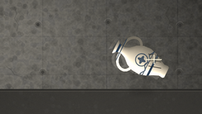
视觉工具实际返回图片 3
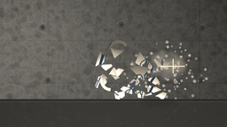
视觉工具实际返回图片 4
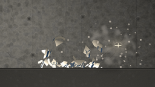
视觉工具实际返回图片 5
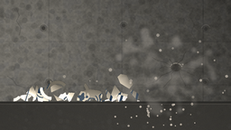
视觉工具实际返回图片 6
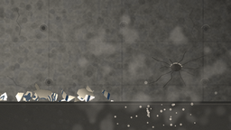
视觉工具实际返回图片 7
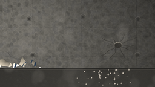
视觉工具实际返回图片 8
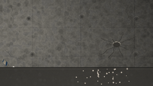
视觉工具实际返回图片 9
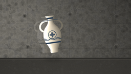
视觉工具实际返回图片 10
视觉工具实际返回图片 11
视觉工具实际返回图片 12
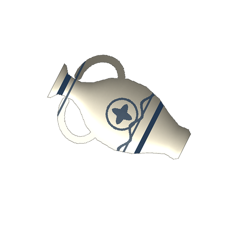
视觉工具实际返回图片 13
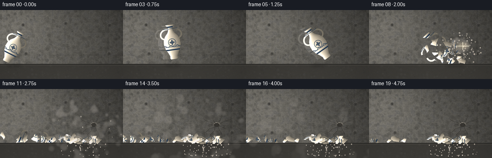
视觉工具实际返回图片 14
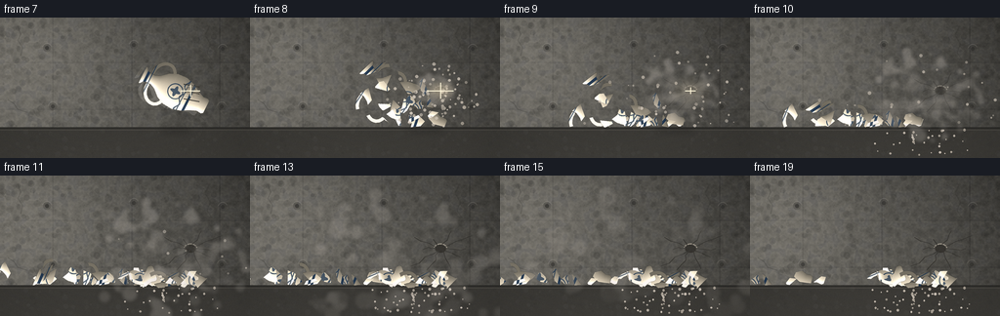
视觉工具实际返回图片 15
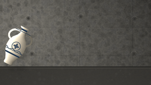
视觉工具实际返回图片 16
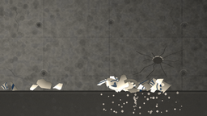
视觉工具实际返回图片 17
视觉工具实际返回图片 18
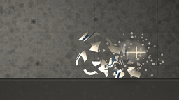
保存候选 2 份；完成命令 18 次；可验证图片返回 18 张。原始 API 响应与完整日志保留在本地。